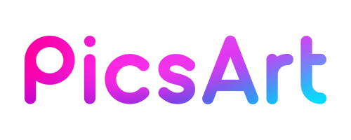
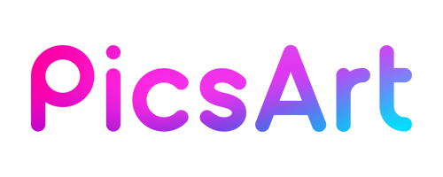

Research Directions
The research of our lab is centered around GRAPHS -- the ubiquitous data structure that can represent data, knowledge, computation engines, and dynamical systems. We aim at providing principles, methodologies, and algorithms to address well-established as well as emerging applications from the graph perspective.
Graphs as Data
Graphs provide a natural data structure to capture dependency between data points. In this line, we have built graph neural networks and other graph learning algorithms that address heterogeneity, generalizability, scalability, and explainability, and successfully applied them to e-commerce, social networks, and healthcare.
-
Heterogeneous Graph Transformer Ziniu Hu, Yuxiao Dong, Kuansan Wang, Yizhou Sun, in Proc. 2020 Int. World Wide Web Conf. (WWW’20), online, Apr. 2020. [PDF][CODE (PyG)][CODE (DGL)]
-
GPT-GNN: Generative Pre-Training of Graph Neural Networks Ziniu Hu, Yuxiao Dong, Kuansan Wang, Kai-Wei Chang, Yizhou Sun, in Proc. of 2020 ACM SIGKDD Int. Conf. on Knowledge Discovery and Data Mining (KDD’20), online, Aug. 2020. [PDF][CODE]
-
Layer-Dependent Importance Sampling for Training Deep and Large Graph Convolutional Networks Difan Zou*, Ziniu Hu*, Yewen Wang, Song Jiang, Yizhou Sun, and Quanquan Gu, Thirty-third Conf. on Neural Information Processing Systems (NeurIPS'19), Vancouver, Dec. 2019. [PDF][CODE]
-
Graph-less Neural Networks: Teaching Old MLPs New Tricks Via Distillation Shichang Zhang, Yozen Liu, Yizhou Sun, and Neil Shah, in Proc. 2022 Int. Conf. on Learning Representations (ICLR’22), Online, April 2022. [PDF] [CODE]
-
Explaining Graph Neural Networks with Structure-Aware Cooperative Games Shichang Zhang, Neil Shah, Yozen Liu, Yizhou Sun, in Proc. of Thirty-sixth Conference on Neural Information Processing Systems (NeurIPS'22), New Orleans, LA, Nov. 2022. [PDF]
-
Bi-Level Attention Graph Neural Networks Roshni Iyer, Wei Wang, and Yizhou Sun, in Proc. 2021 IEEE Int. Conf. on Data Mining (ICDM'21), online, Dec. 2021. [PDF]
Graphs as symbolic knowledge
Graphs can represent knowledge in the form of knowledge graphs, which serve as external memory to modern AI systems. In this line, we propose to combine representation learning and symbolic reasoning to achieve robust and human interpretable reasoning, and push reasoning into applications such as Q&A systems.
-
Fuzzy Logic Based Logical Query Answering on Knowledge Graphs Xuelu Chen, Ziniu Hu, Yizhou Sun, in Proc. of the 36th AAAI Conf. on Artificial Intelligence (AAAI'22), Online, Sept. 2022. [PDF] [CODE]
-
Relation-Guided Pre-Training for Open-Domain Question Answering Ziniu Hu, Yizhou Sun, Kai-Wei Chang, in Findings. 2021 Conf. on Empirical Methods in Natural Language Processing (EMNLP'21 Findings), online, Nov. 2021. [PDF]
-
UniKER: A Unified Framework for Combining Embedding and Definite Horn Rule Reasoning for Knowledge Graph Inference Kewei Cheng, Ziqing Yang, Ming Zhang, and Yizhou Sun, in Proc. 2021 Conf. on Empirical Methods in Natural Language Processing (EMNLP'21), online, Nov. 2021. [PDF][CODE]
-
RLogic: Recursive Logical Rule Learning from Knowledge Graphs Kewei Cheng, Jiahao Liu, Wei Wang, Yizhou Sun, in Proc. of 2022 ACM SIGKDD Int. Conf. on Knowledge Discovery and Data Mining (KDD’22), Washington, DC, Aug. 2022. [PDF]
-
Universal Representation Learning of Knowledge Bases by Jointly Embedding Instances and Ontological Concepts Junheng Hao, Muhao Chen, Wenchao Yu, Yizhou Sun, and Wei Wang, Proc. of 25th Int. ACM SIGKDD Conf. on Knowledge Discovery and Data Mining (KDD'19) (Oral Presentation), Anchorage, AK, Aug. 2019. [PDF][CODE]
-
Dual-Geometric Space Embedding Model for Two-View Knowledge Graphs Roshni G. Iyer, Yusheng Bai, Wei Wang, Yizhou Sun, n Proc. of 2022 ACM SIGKDD Int. Conf. on Knowledge Discovery and Data Mining (KDD’22), Washington, DC, Aug. 2022. [PDF]
Graphs as computation engines
In addition to data and knowledge, graphs can also represent computation engines, such as neural networks, programs, and hardware. In this line, we explore to use graph-based learning for performance prediction and design space search.
-
Improving GNN-Based Accelerator Design Automation with Meta Learning Yunsheng Bai, Atefeh Sohrabizadeh, Yizhou Sun, and Jason Cong, in Proc. of 59th ACM/IEEE Design Automation Conference (DAC'22), San Francisco, July 2022. [PDF]
-
Enabling Automated FPGA Accelerator Optimization Using Graph Neural Networks Atefeh Sohrabizadeh, Yunsheng Bai, Yizhou Sun, and Jason Cong, in Proc. of 59th ACM/IEEE Design Automation Conference (DAC'22), San Francisco, July 2022. [PDF]
Graphs as dynamical systems
Graphs can also describe dynamical systems where multiple agents are interacting and influencing each other. We propose GraphODEs to model and learn the continuous dynamics for blackbox dynamical systems from observed data, which can capture long-term dynamics and are essential for applications such as material dynamics simulation.
-
Coupled Graph ODE for Learning Interacting System Dynamics Zijie Huang, Yizhou Sun, and Wei Wang, in Proc. of 2021 ACM SIGKDD Int. Conf. on Knowledge Discovery and Data Mining (KDD'21), online, Aug. 2021. [PDF][CODE]
-
Learning Continuous System Dynamics from Irregularly-Sampled Partial Observations Zijie Huang, Yizhou Sun, Wei Wang, in Thirty-fourth Conf. on Neural Information Processing Systems (NeurIPS'20), online, Dec. 2020. [PDF][CODE]
Other AI frontiers:
We are also exploring new AI frontiers, with the goal of expanding the scope of graphs. We focus on, but are not limited to:
- Causal inference on graphs:
Estimating Causal Effects on Networked Observational Data via Representation Learning Song Jiang, Yizhou Sun, in Proc. of 31st ACM International Conference on Information and Knowledge Management (CIKM'22), Atlanta, GA, Oct. 2022. [PDF][CODE]
- Fairness of graph learning:
On the Discrimination Risk of Mean Aggregation Feature Imputation in Graphs Arjun Subramonian, Kai-Wei Chang, Yizhou Sun, in Proc. of Thirty-sixth Conference on Neural Information Processing Systems (NeurIPS'22), New Orleans, LA, Nov. 2022. [PDF]
- Social goods in graph setting:
TIMME: Twitter Ideology-detection via Multi-task Multi-relational Embedding Zhiping Xiao, Weiping Song, Haoyan Xu, Zhicheng Ren and Yizhou Sun, in Proc. of 2020 ACM SIGKDD Int. Conf. on Knowledge Discovery and Data Mining (KDD’20), online, Aug. 2020. [PDF][CODE]
Research Support
Our lab is generously supported by NSF (#1741634, #1705169, #1937599, #2119643, #2211557), DARPA, NASA, PPDAI, Yahoo!, Nvidia, Snapchat, Amazon, Okawa Foundation, Picsart, and Cisco.


 
